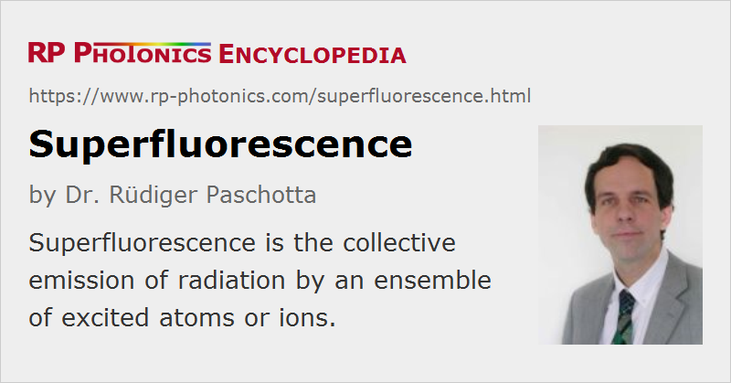

Superfluorescence
Definition: collective emission of radiation by an ensemble of excited atoms or ions
More general term: fluorescence
German: Superfluoreszenz
How to cite the article; suggest additional literature
Author: Dr. Rüdiger Paschotta
Superfluorescence is a phenomenon of quantum optics. It is the collective emission of fluorescent light by an ensemble of excited atoms or ions [1]. Initially, the atoms (or ions) are incoherently excited (e.g. by optical pumping), so that there is no macroscopic dipole moment. The process starts slowly with spontaneous emission. The radiation field then couples the radiation phases of the different atoms, so that they become synchronized, and a collective emission releases the stored energy as a superfluorescent pulse. The pulse maximum occurs after some delay, and the pulse duration can be short compared with the upper-state lifetime of a single atom. The maximum intensity of the emitted light scales with the square of the number of atoms.
Superfluorescence is similar to superradiance, but in the latter case there is a macroscopic dipole moment from the beginning, created by the excitation process. Many authors, however, do not distinguish between superfluorescence and superradiance.
The phenomenon of superfluorescence, as defined above, is also substantially different from superluminescence or amplified spontaneous emission (ASE). The latter process does not require close proximity and coherent excitation, and is based only on fluorescence and stimulated emission. Superfluorescence and superluminescence are processes which can compete in certain situations, depending on, e.g., the dephasing rate of the atomic system [4].
Unfortunately, there appears to be no authoritative definition of the term superfluorescence, and the literature contains many scientific papers where the term has been used with different meanings. For example, the term superfluorescence source (or superfluorescent source) is in most cases used such that it means the same as the actually more suitable term superluminescent source.
Questions and Comments from Users
Here you can submit questions and comments. As far as they get accepted by the author, they will appear above this paragraph together with the author’s answer. The author will decide on acceptance based on certain criteria. Essentially, the issue must be of sufficiently broad interest.
Please do not enter personal data here; we would otherwise delete it soon. (See also our privacy declaration.) If you wish to receive personal feedback or consultancy from the author, please contact him e.g. via e-mail.
By submitting the information, you give your consent to the potential publication of your inputs on our website according to our rules. (If you later retract your consent, we will delete those inputs.) As your inputs are first reviewed by the author, they may be published with some delay.
Bibliography
| [1] | R. Bonifacio and L. A. Lugiato, “Cooperative radiation processes in two-level systems: superfluorescence”, Phys. Rev. A 11 (5), 1507 (1975), doi:10.1103/PhysRevA.11.1507 |
| [2] | R. Bonifacio and L. A. Lugiato, “Cooperative radiation processes in two-level systems: superfluorescence. II”, Phys. Rev. A 12 (2), 587 (1975), doi:10.1103/PhysRevA.12.587 |
| [3] | M. S. Malcuit et al., “Transition from superfluorescence to amplified spontaneous emission”, Phys. Rev. Lett. 59 (11), 1189 (1987), doi:10.1103/PhysRevLett.59.1189 |
| [4] | J. J. Maki et al., “Influence of collisional dephasing processes on superfluorescence”, Phys. Rev. A 40 (9), 5135 (1989), doi:10.1103/PhysRevA.40.5135 |
See also: superradiance, superluminescence, fluorescence, spontaneous emission, amplified spontaneous emission, stimulated emission, quantum optics
and other articles in the category quantum optics
|  |
If you like this page, please share the link with your friends and colleagues, e.g. via social media:
These sharing buttons are implemented in a privacy-friendly way!